hi, this is Sixian (si-shen). I graduated from my psychology bachelor's degree almost two years ago, and I decided to fill my skill gap in technology so that I can bring my perspective to make a real impact.
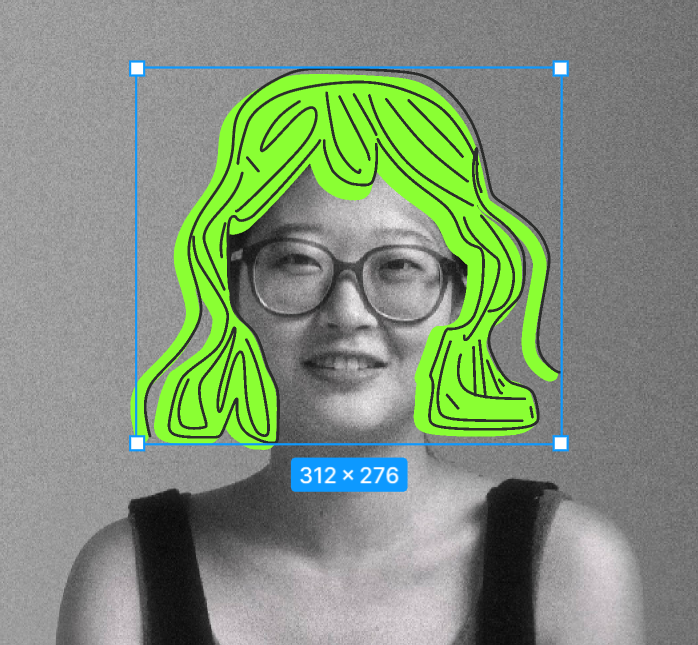
I show up with energy, love talking with people, and like keeping things simple and moving along. When I'm not doing that, you'll probably find me in forests, just enjoying a quiet life and making visual stuff.
Photography work
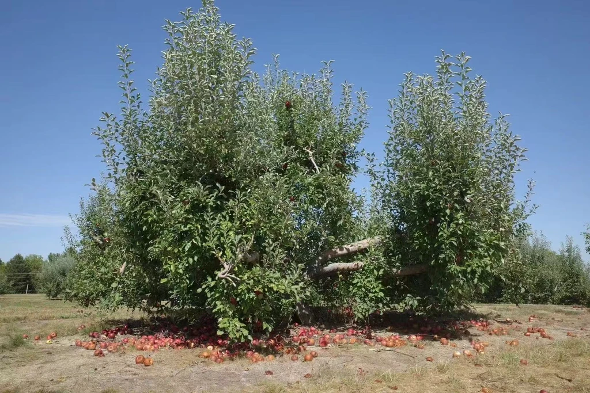
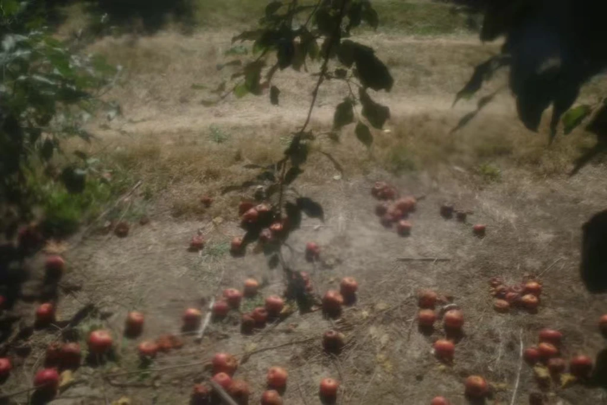
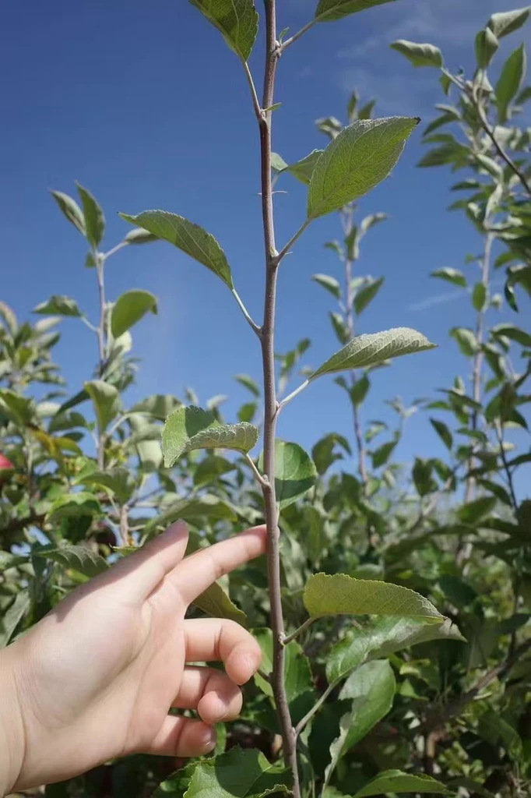
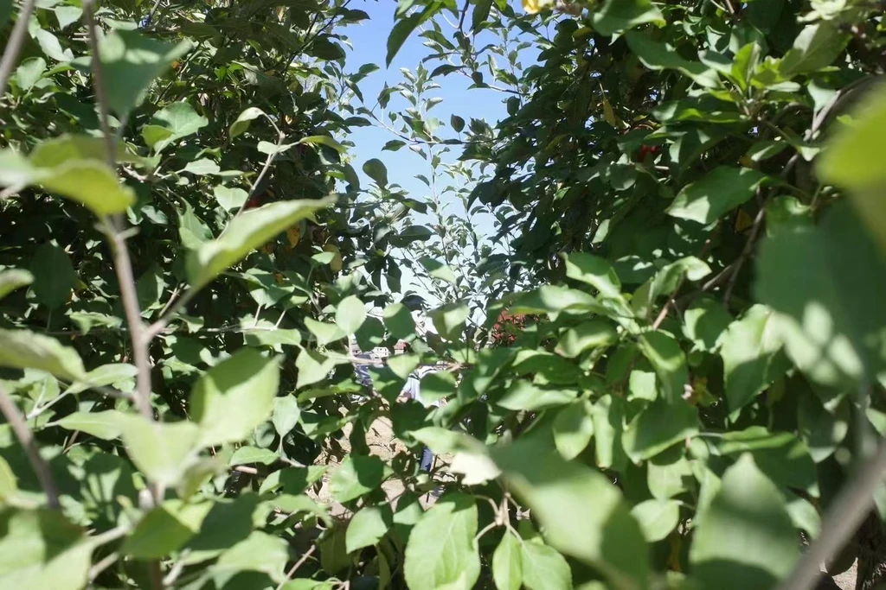
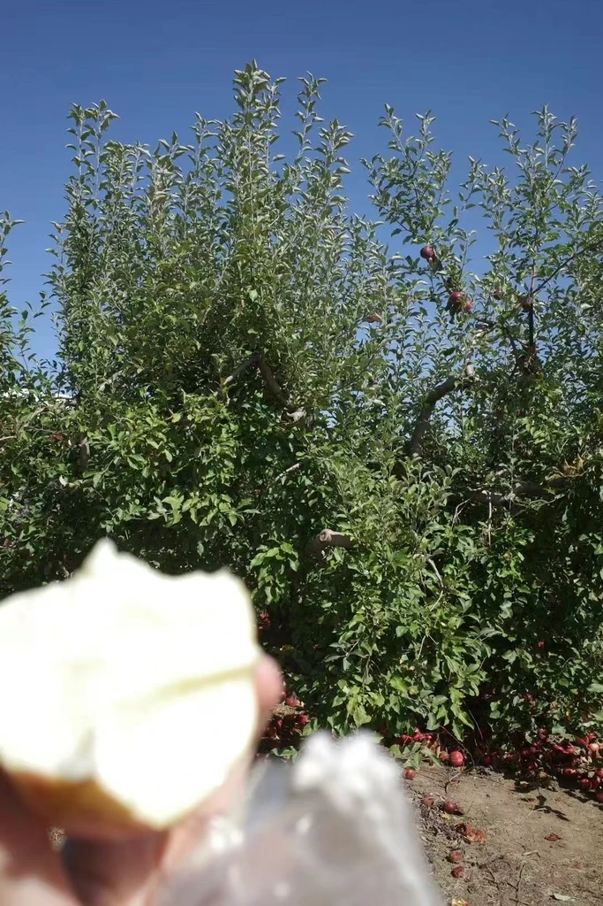
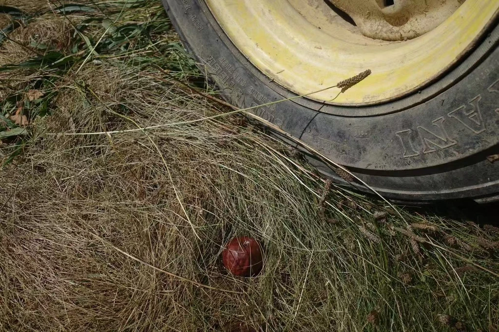
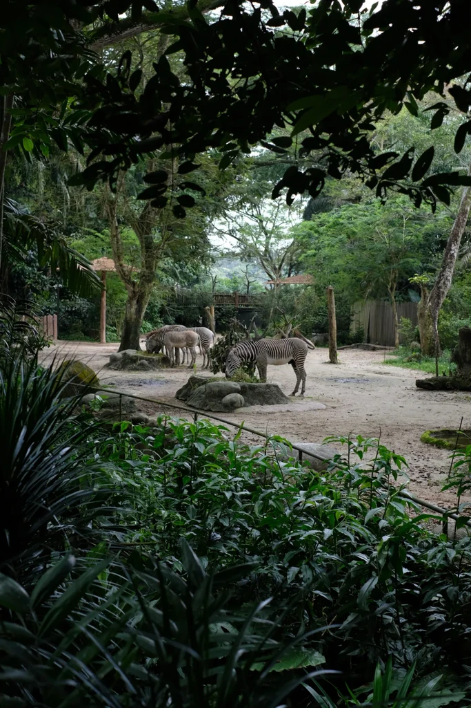
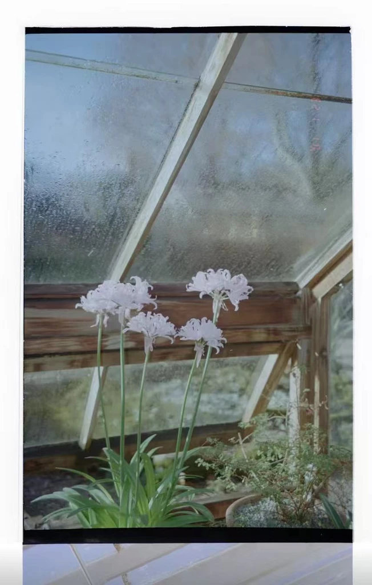
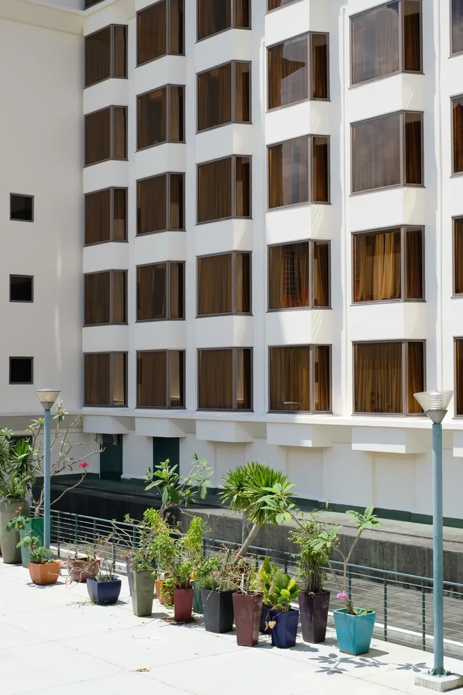
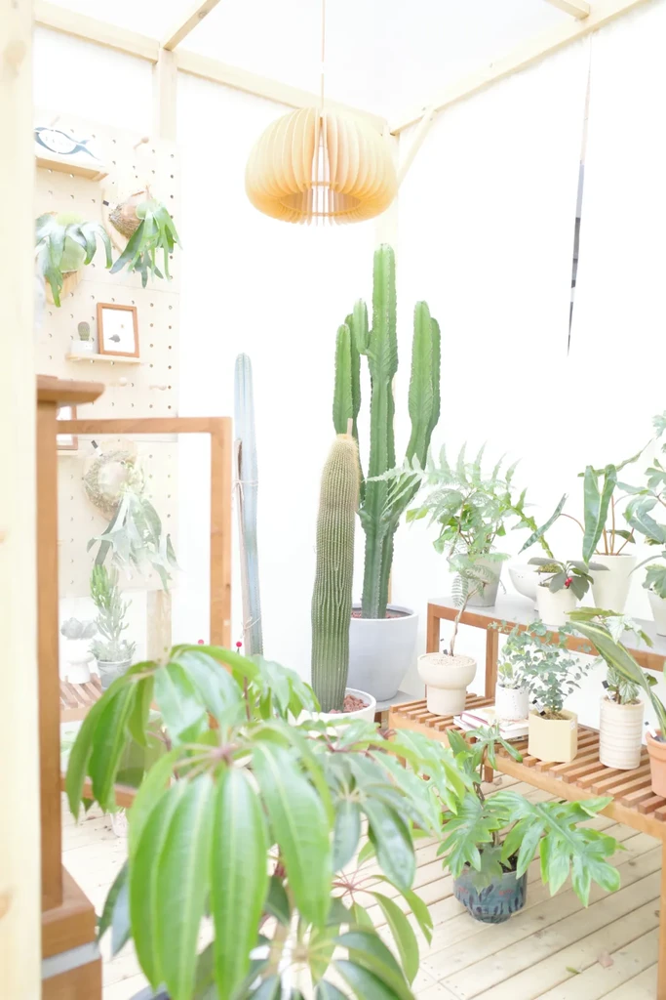
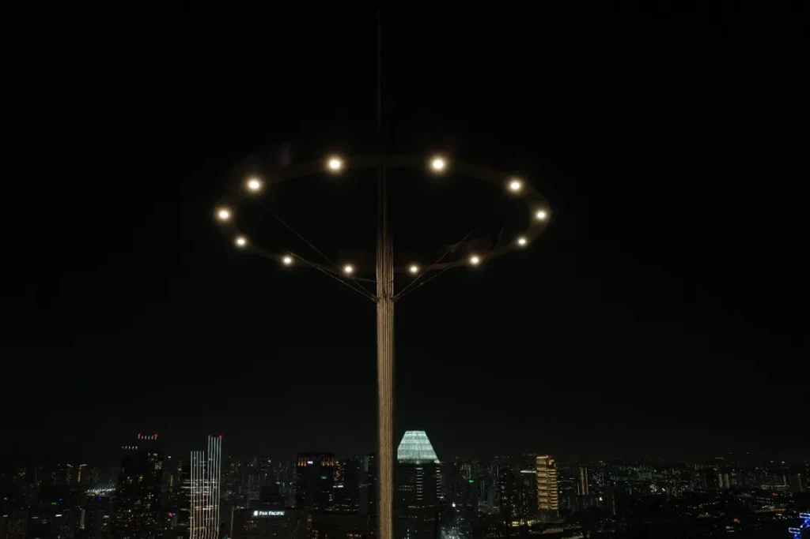